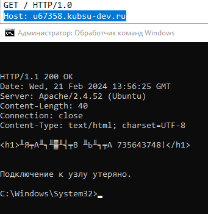
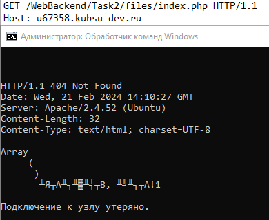
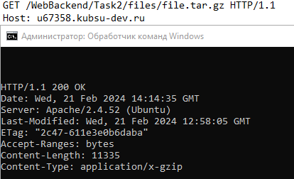
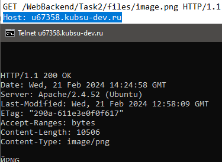
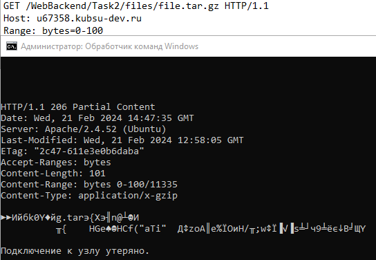
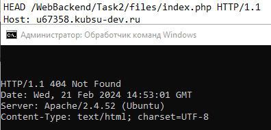

1) получить главную страницу методом GET в протоколе HTTP 1.0:

2) получить внутреннюю страницу методом GET в протоколе HTTP 1.1:

3) определить размер файла file.tar.gz, не скачивая его:

4) определить медиатип ресурса /image.png:

5) отправить комментарий на сервер по адресу /index.php:
 6) получить первые 100 байт файла /file.tar.gz:
6) получить первые 100 байт файла /file.tar.gz:

7) определить кодировку ресурса /index.php:
